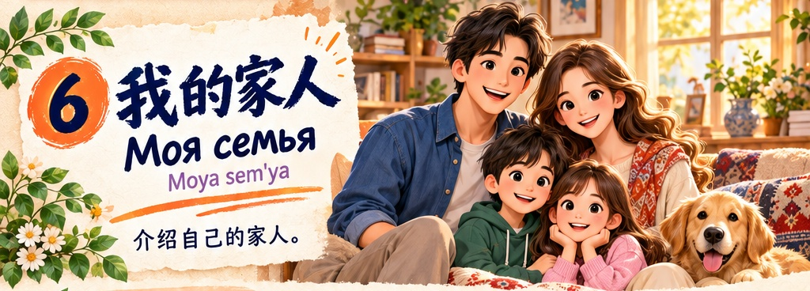
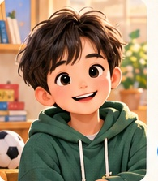
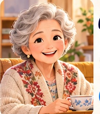
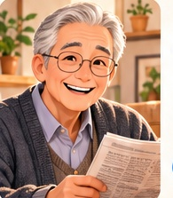
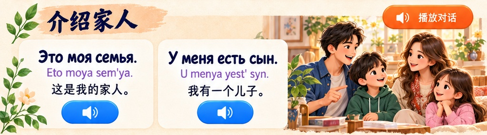
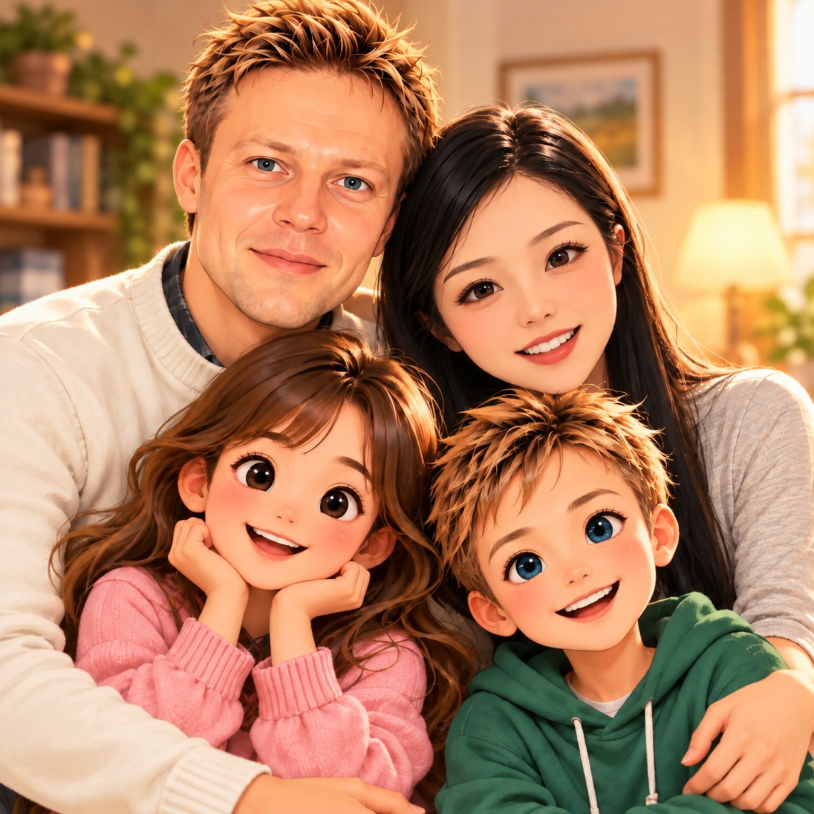

мама
mama
妈妈






补充词汇 · Новые слова о семье
听对话，跟着两个声音重复一遍 · 听、读、说


6 个新词 · 看中文、听俄语、跟读
💡 小提示：俄语的 «брат» 可以指哥哥或弟弟；«сестра» 可以指姐姐或妹妹。«друг» 通常指男性朋友，«подруга» 指女性朋友。
6 个新句子 · 我的 / 有 / 没有
德米特里与斯韦特兰娜 · 两个不同的声音
① 用俄语说：“这是我的妈妈。” 提示：Это моя мама.
② 用 «У меня есть…» 说出一位家人，例如：У меня есть брат.
③ 用 «У меня нет…» 练习否定句，例如：У меня нет детей.
④ 在上面的卡片中点击“跟读”，对照识别的俄语文字练习。识别结果不能准确判断重音。
学会表达“我的家人”，还能说出“我有……”和“我没有……”。以下句子只使用本课程的基础词汇。
复习本课内容，做个小测验吧！
每题只有一个正确答案。听题目，选择答案，再看解释。
拉丁字母是俄语转写，不是汉语拼音。先听录音，再跟读。